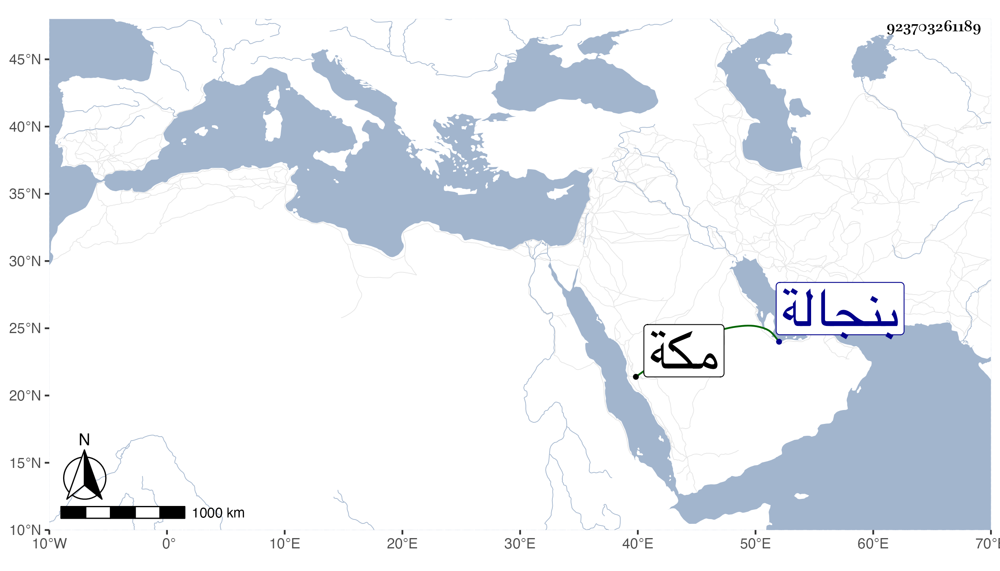

0902Sakhawi.DawLamic.ITO20230111-ara1.EIS1600.923703261189
Biography ID: 923703261189
665
معوضة الفقير الصادق المخاطر في الله بروحه من أصحاب الشيخ عمر العرابي كان لا يرى منكراً الا غيره ولا يهاب أحداً كائناً من كان بحيث صارت له هيبة ولا يخالفه أحد وكان يحمل عصا بيده يضرب بها من يخالفه ويقوم بها فى المطاف فيحول بين الرجال والنساء و يدفع أهـل الدكاكين في المسعى توسعة للساعين وأنكر على الامير بيسق وهو يعمر في الحرم أموراً فرجع إليه ولما أراد طواشي صاحب بنجالة بناء مدرسة لأستاذه بمـكة عند باب المسجد المعروف بباب أم هانىء وأراد الخروج بالجدار الذي يلي الشارع إلى حذاء مدرسة الشريف عجلان منعهم من ذلك واضطجع في محـل البناء وقال أبنوا فوقى فبذل الطواشي لحكام مكة مالا فعجزوا عن دفعه . مات في سنة ست عشره رحمه الله ذكره ابن فهد .
